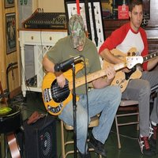

Bradley's Hobbies
Building Antique Trucks

Playing Music

Cooking Meals
Playing Video Games
Bradley embarked on his journey into Technology in the early 2000s. He began his path at a community college to obtain an AAS in Multimedia Web Design and certificates in Internet Technologies. One of his professors, who worked at Southwest Airlines (SWA) at the time, quickly noticed his skills and offered him an internship at Southwest Airlines. He took the position in 2006. Then, he swiftly took the hearts of the people at Southwest Airlines, making a huge impact on the company. After a short year, he became the Interactive Multimedia Specialist. Even though that he accomplished much within a few years, his journey had only begun. He was rapidly being promoted within the company. From being a specialist from 2007 through 2010, he then became the Multimedia Team Leader. Three years later, he became the manager of Online Learning and Multimedia Team at SWA to present day. Bradley states, “Today, I lead a team of 20 creative developers that range from Instructional Designers, Graphic Designers, Audio and Video Producers, and Web Developers. We are responsible for designing performance based learning to over 50,000 employees at the company which equate to over 2 million learning hours annually.”
Bradley has great skills and creativity, but what makes him important to his company is his sense of warmth and friendliness to others. Bradley brings respect and a caring attitude to his team and company. He is a very helpful, welcoming and fun-LUVing person; Southwest Airlines is the perfect fit for him.
Building Antique Trucks
Playing Music
Cooking Meals
Playing Video Games
~ “Southwest has been in LUV with our Customers from the very beginning. The mission of Southwest Airlines is dedication to the highest quality of Customer Service delivered with a sense of warmth, friendliness, individual pride, and Company Spirit” (SWA).
“I absolutely love my job and company! I've been blessed to be a part of the SWA family for many years now and look forward to what the future brings!”
Bradley was born in Dallas, Texas. In his free time, you will catch him playing video games or working on trucks. At the age of sixteen, Bradley rebuilt a 1959 truck that he still owns today. Occasionally he will take it to car shows and win prizes. To this day, I have not found something that Bradley cannot fix. From fixing broken televisions, computers, game consoles to fixing all types of furniture. Overall, Bradley has many skills and talents that he uses to help people all the time.